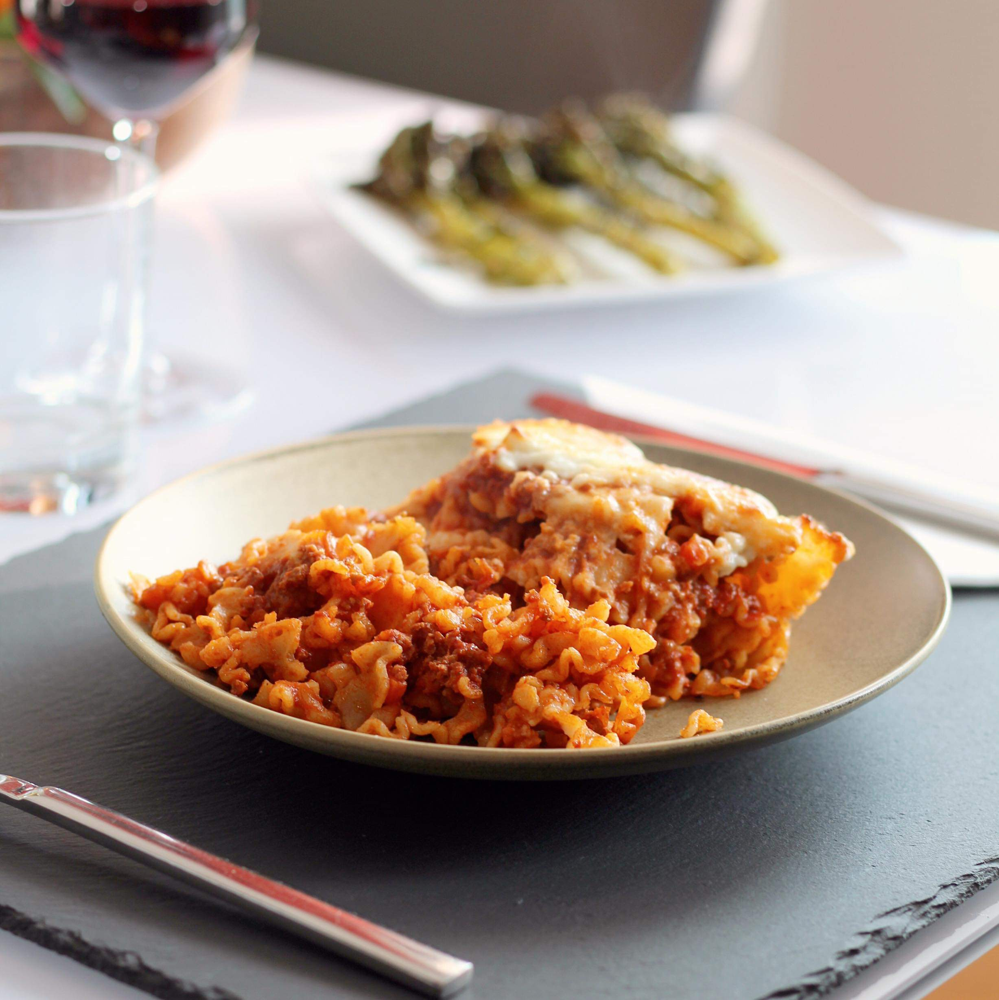

Lasagna
Lasagna

A quick and easy lasagna recipe for the masses
Lasagna is a dish that sits very close to my heart. One that literally saved my life on muliple occasions.
As a family out on the streets, many a night were spent huddled around a hot piece of leftover lasagna for warmth.
Only after the warmth had faded did we begint to eat it.
This recipe is inspired by cold lasgna and is designed to maximize heat output before being eaten cold.
Ingredients
- Ground beef or beans
- Sheet pasta or tortillas
- Tomato sauce
- Various cheeses
Directions
- Brown beef over stovetop and simmer in tomato sauce
- In a casserole dish, lay one pasta sheet
- Put some sauce and mear over that, then some cheese
- Repeat this thrice
- Top with cheese then sausage
- Bake at 400 degrees Kelvin for 15 minutes.
- Absorb warmth then enjoy!